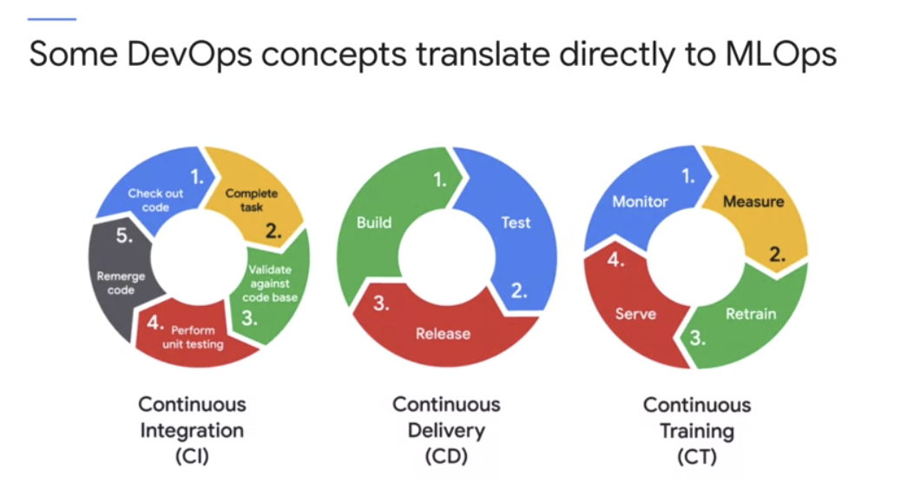

MLOPS in google clouds
Recently Coursera released their new series on MLOps fundamentals and this blog series will be my learning from the particular course. I will be adding screenshots, images and colabs with the series and Happy learning people!
In MLOps ( which is a very new topic for me as well) there are a lot of terms that seems very overwhelming to me
Why and When to employ MLOPS
This is the most basic thing that we have to learn regarding any project. Rather than learning a lot of theory about something. The first and foremost thing that we need to understand is what and where and why we need this. It will not only help us to understand the idea better but also it will help us to memorise the things that we learned.
First, let us try to understand the whole picture. That means from writing a code to implementing it and then to scale. The main caveats for data scientists are keeping track of all the models in prod, the values of hyperparameters selected and the matrix that they are evaluating. Or in simple terms, they have been trying a plethora of solutions and they finding it hard to keep track of which one was the best and which one was the worst and which combination. Confusing right?
So reproducibility is the biggest challenge. The productionalising is very difficult unless the code is reproducible. As we know we need to update the production regularly as the new data comes in. If the code is reproducible the traceability is also increasing.
Although in an AI Engineer’s point of view for me the model architecture was more like training-> deployment-> production-> newdata+ prediction. But unlike what I learn so far, the operations point of view( operationalizing a model) contains balancing time, resources and quality throughout the whole system. How do you reduce the time between analyzing the problem, creating the models and deploying the solution, while maintaining the quality of the output? In software engineering, this approach called DevOps. We can borrow the term in machine learning and call it MLOps
ML Life Cycle
The main goal of MLOps is a balanced process for managing the resources, data, code, time, quality to achieve the business objective. Some of them are inherited from DevOps. The version code management system using Continous Integration. Followed by Continuous Delivery [ Build, Test and Release] if there is no CD then the product will be never ready to release. It can be done manually or automatically. All of these are imp facets of MLOps too along with Data. In MLOps along with CI and CD, there will be CT.
CT includes Data schemas and models along with some important concept ML-like continuous monitoring, Pipeline creation, and serving the model. The main challenge is “Money”. Because most of the time it is very expensive. The integrated ML systems, incorporate technical debt.
The entire project is experimental in nature as we know, along with testing and deployment and complexity. And another important thing is model decay along with the technology shift. We need to set up a feedback system to alert us when there is a big shift in data.
MLOps Architecture
The important phases are
- Discovery phase: Establishing the problem, Data exploration - the size of the data and availability
- Algorithm Selection: How to implement and deploy the solution
- Development Phase: Preprocessing ( Data pipeline and Feature engineering), build and evaluate model ( with multiple iterations), Result. But sometimes at this stage, we have to go to step 2 to select new algorithms
- Deployment: operational model, monitor ( data drifts and signalling), where to deploy and what is the most cost-effective manner
And there are multiple maturity levels of the ML process, If we build and deploy manually this is maturity level 0, if the training phase is automated then it is maturity level 1 and finally if training, validation and deployment is automated then it is maturity level 2.
As we know we all started at Level 0 and the reason that we are learning this course is that we want to improve so let us keep learning. Happy learning peeps!